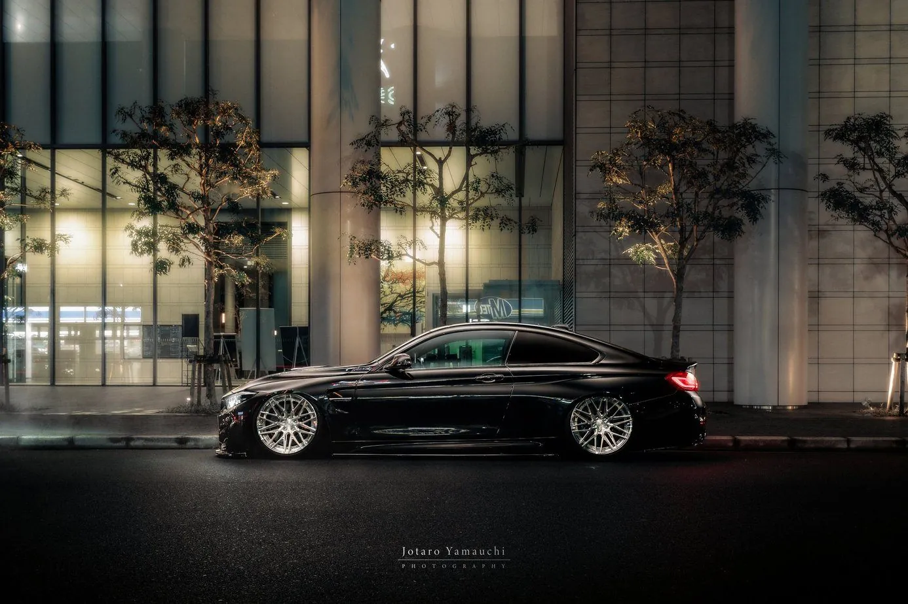

01Work
仕事
トヨタ系の自動車部品メーカーで、安全製品の製造に携わっています。
はじめまして、よしろうです。
トヨタ系の自動車部品メーカーで、安全製品の製造に携わっています。
クルマを好きになったのは父の影響。以前はフェアレディZ（Z34）に乗っていて、 今は BMW M4 とのカーライフを楽しんでいます。

ここに愛車への思いや、こだわりポイントを書きます。
BMW M4（F82 / 2017）を納車。ボディカラーはブラック。記事を読む →
APgarage pneumatec エアサスペンションを導入。記事を読む →
BC Forged HCA386S を装着。記事を読む →
NEWYEAR MT 2023 に参加。記事を読む →
MAXTON design のリップ・サイド・リアを装着。記事を読む →
Wreckin' Meet に参加。記事を読む →
Fenderist 2024 にエントリー（F154 / STOCK FENDER 部門）。記事を読む →
A-MESSE に参加。記事を読む →
Photo: Jotaro Yamauchi Photography